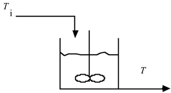
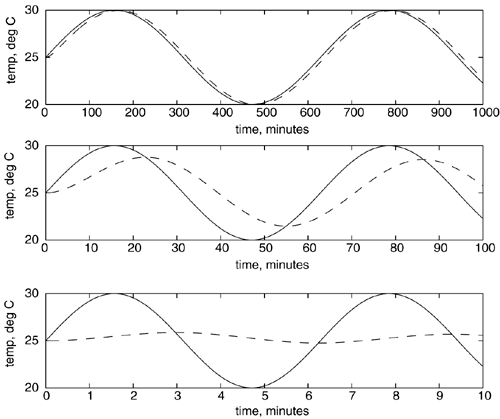
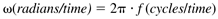
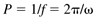
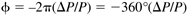
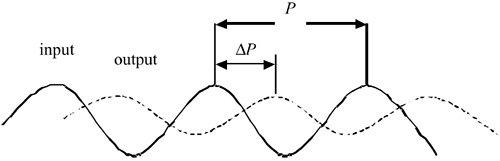
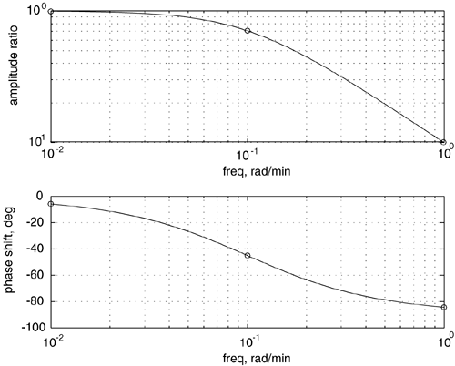

| [ Team LiB ] |
|
7.1 MotivationA control system must satisfy desired performance characteristics (closed-loop time constant, minimal overshoot, etc.) for nominal operating conditions. By nominal, we normally mean that the plant is perfectly described by the model used for control-system design. In reality, a model is never perfect, so controllers must be designed to be robust (to remain stable even when the true plant characteristics are different from the model). So far we have analyzed the closed-loop characteristic equation (1 + gcgp) for stability, either by directly calculating the roots or by using the Routh array to verify that the roots (closed-loop poles) are negative. There are two problems with this approach:
The best method for dealing with both of these problems is frequency response analysis. Our motivation for covering frequency response analysis is primarily that it provides a measure of the robustness of the controller tuning; that is, it provides a measure of the amount of model uncertainty that can be tolerated before the control system will become unstable. We consider the ability to determine the stability of systems with irrational transfer functions (time delays) to be less important, because a higher order Padé approximation can provide an adequate representation of the time delay, for analysis purposes. To understand the concept of frequency response, consider the well-insulated, perfectly mixed tank with constant flow in and out (perfect level control), shown in Figure 7-1. Assume that the inlet temperature varies in a sinusoidal fashion between a minimum of 20°C, a maximum of 30°C, with an average of 25°C. The amplitude of the inlet temperature sine wave is then 5°C. Figure 7-1. Perfectly mixed tank with varying inlet temperature. This tank has a volume of 100 gallons, with a flow rate of 10 gallons/minute. You can easily show that this system is modeled by a first-order transfer function, with a gain of 1°C/°C and a time constant of 10 minutes. The responses to different frequencies in the inlet temperature are shown in Figure 7-2. Notice that at low-frequency (0.01 rad/minute) forcing (top plot), the outlet temperature (dashed line) has approximately the same amplitude as the inlet temperature (solid line), with very small shift in the peak time. At an intermediate frequency (0.1 rad/minute) forcing, we begin to see a decrease in the amplitude of the outlet temperature, as well as a "lag" in the peak time (center plot). At a high frequency (1 rad/minute), the outlet temperature does not vary substantially (bottom plot). Figure 7-2. Response of outlet temperature to various inlet temperature frequencies. Inlet temperature (solid), outlet temperature (dashed). Top, 0.01 rad/minute; center, 0.1 rad/minute; bottom, 1 rad/minute. Note the different timescales. Please note that radians/time is the common unit used for frequency response analysis in process control. You may be more comfortable thinking in terms of cycles/time. Since there is one cycle for each 2p radians, then a frequency (f) in cycles/time can be converted to a frequency, w, in radians/time by  Also, the period P ("peak-to-peak time") corresponds to one cycle and can be found by  The input-output behavior shown in Figure 7-2 makes physical sense. At low frequencies the inlet temperature changes on a much slower timescale than the characteristic time of the process, so the outlet temperature is virtually identical to the inlet temperature. At high frequencies, the inlet temperature changes so rapidly that the "thermal mass" of the process does not allow the outlet temperature to change significantly. In terms of dynamic behavior, this type of system is known as a "low-pass filter" that is, low-frequency inlet forcing is directly felt at the output. High input frequencies are effectively filtered by the process and not felt at the output. There are two important measures that can be obtained from these time-domain plots. One is the amplitude ratio, which is the amplitude of the output sine wave divided by the input sine wave. The second measure is the phase shift of the output sine wave relative to the input sine wave, as illustrated in Figure 7-3. The phase shift, or phase angle, is  Figure 7-3. Illustration of phase shift or phase angle, f = –360°(DP/P). where P is the period, and DP is the lag between an input peak and an output peak. For example, if the output were exactly out of phase with the input (output at a minimum when the input is a maximum), the phase angle would be –180° or p radians. If the output lagged the input by a full cycle, the phase angle would be –360°, and it is possible for the phase angle to exceed this value (particularly for processes with a time delay). The phase angle in the bottom plot of Figure 7-2 is approximately –90° (0.5p radians). Rather than generating numerous time-domain plots like Figure 7-2, each at a different frequency, the equivalent results can be displayed concisely on a Bode plot, as shown in Figure 7-4. The amplitude ratio plot is log-log, while the phase angle plot is semilog. Figure 7-4. Bode plot of the first-order example. Amplitude ratio and phase shift are plotted as a function of frequency. The circles correspond to the three frequencies used on the mixing tank. |
| [ Team LiB ] |
|